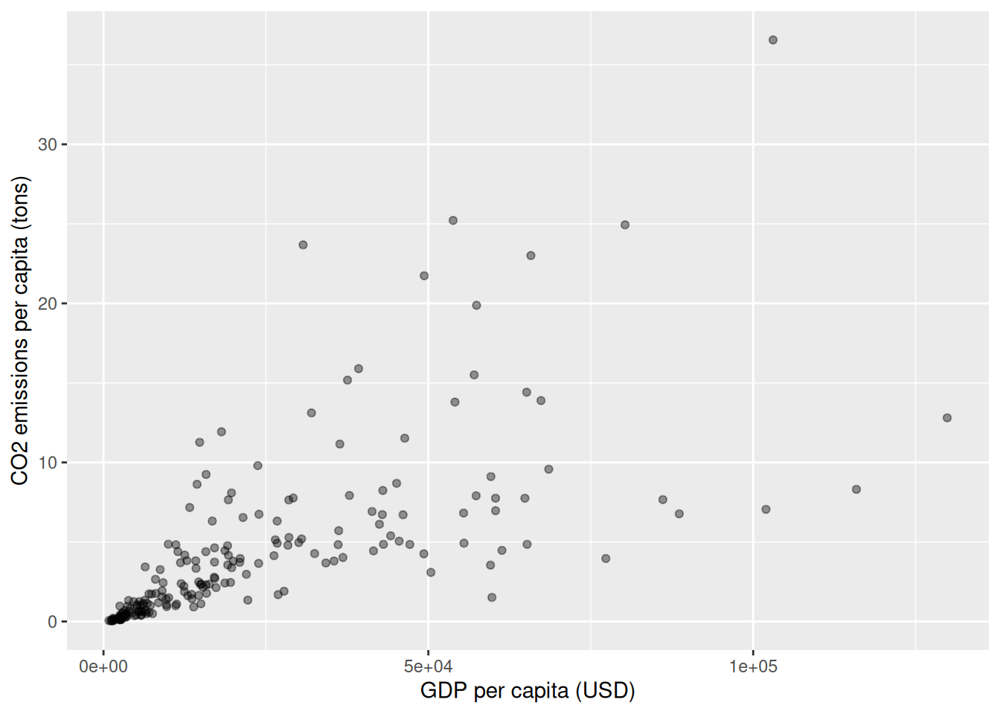
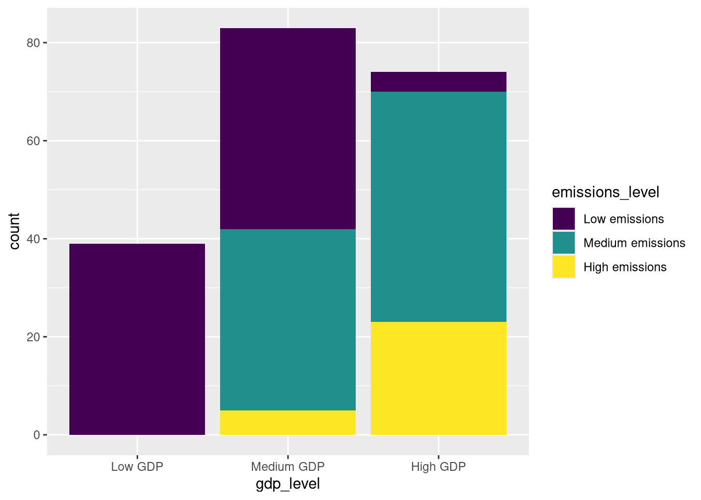
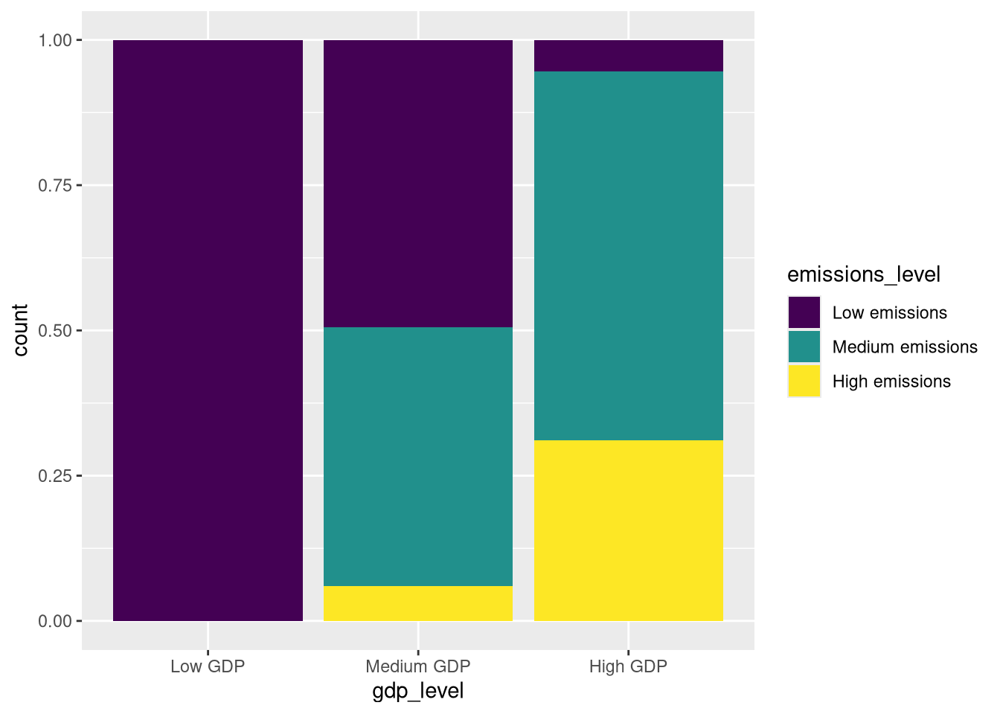
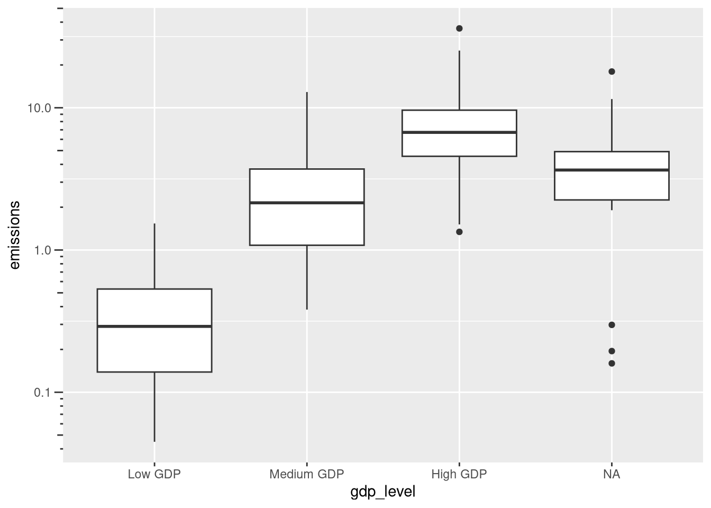
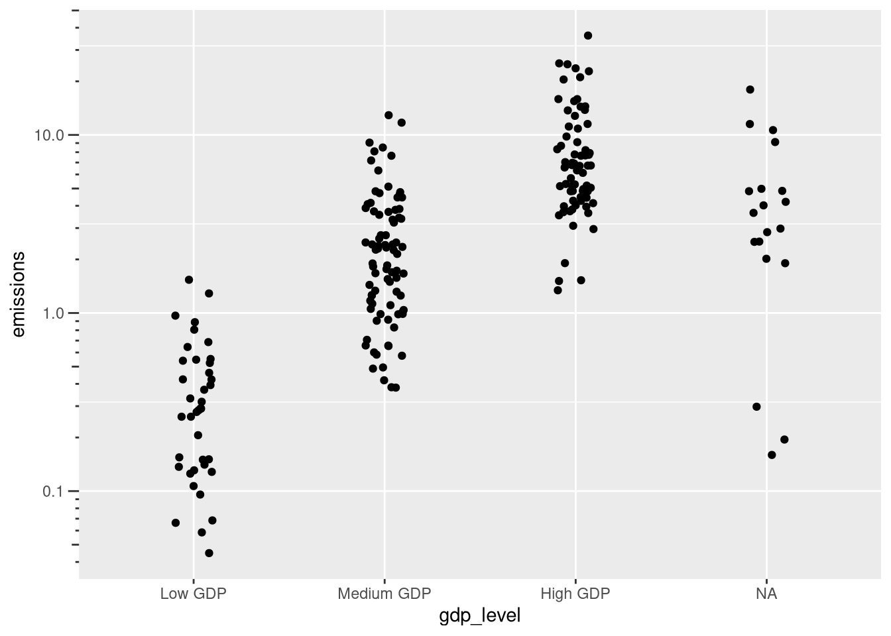
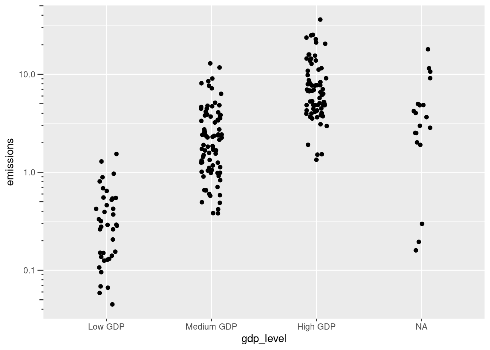
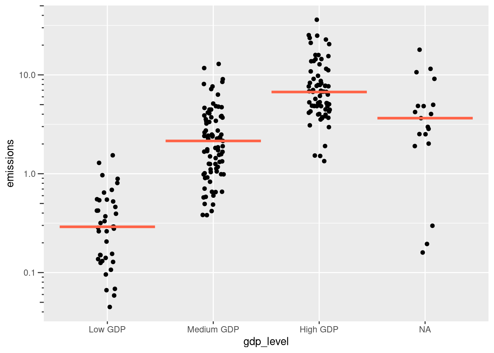

library(tidyverse)
df <- arrow::read_parquet("data/emi-pop-gdp.parquet")Quantitative Methods and Statistics
An applied course using the R programming language
Loading data and packages
As in the last session, we will continue working with our CO₂ emissions, population, and GDP data. However, instead of analyzing variables in isolation, we will now move to multivariate descriptions and explore how variables relate to each other. Ultimately, many multivariate research designs will be asymmetric in the roles that variables occupy, i.e., typically we want to study variation in one primary variable as a function of other variables. However, we will here start with simple symmetric, bivariate measures used to describe the strength and sign of a statistical association between two variables.
We begin by loading packages and reading the datasets from parquet files:
A quick glance at the summaries of our three primary variables shows some of the summaries we learned about last session but also indicates some missing values in GDP and population, which are not available for all years and all countries:
summary(df$emissions) Min. 1st Qu. Median Mean 3rd Qu. Max.
0.000 0.174 1.016 3.945 4.337 782.743 summary(df$population) Min. 1st Qu. Median Mean 3rd Qu. Max. NA's
1.472e+03 6.820e+05 4.571e+06 5.004e+07 1.484e+07 8.092e+09 8128 summary(df$gdp) Min. 1st Qu. Median Mean 3rd Qu. Max. NA's
510.8 4305.9 12391.6 21291.5 30701.2 174339.0 16499 To avoid the missing data problem and to make things easier, we will focus on a single year again, to begin with:
df2020 <- filter(df, year == 2020) Now we have a combined dataset with emissions, population, and GDP data for countries. The kinds of multivariate analyses which are sensible depend on the combination of our variables’ data types, which we will walk through in the following.
Two numerical variables
Scatterplots
Scatterplots are the fundamental tool for visualizing the relationship between two numerical variables. Each point represents one observation, with its position determined by the values of both variables.
ggplot(df2020, aes(x = gdp, y = emissions)) +
geom_point(alpha = 0.4) +
labs(
x = "GDP per capita (USD)",
y = "CO2 emissions per capita (tons)"
)Warning: Removed 19 rows containing missing values or values outside the scale range
(`geom_point()`).The scatterplot reveals a clear positive relationship: wealthier countries tend to have higher per-capita emissions. However, there is considerable variation, especially among wealthier countries, and a lot of the observations are clumped together at the lower end.
Two sessions ago, we have learned that in such a case, it might make sense to apply a log transformation to our variables:
ggplot(df2020, aes(x = gdp, y = emissions)) +
geom_point(alpha = 0.6) +
scale_x_log10() +
scale_y_log10() +
labs(
x = "log GDP per capita (USD)",
y = "log CO2 emissions per capita (tons)"
)Warning: Removed 19 rows containing missing values or values outside the scale range
(`geom_point()`).
This reveals a much less noisy picture of the relationship and also makes sense, conceptually: An increase in GDP per capita by a factor of X is typically associated with an increase in emissions by a factor of Y. Going forward, take note of the fact that the relationship is quite linear, but not perfectly so.
Pearson’s correlation coefficient
While scatterplots show us the relationship visually, correlation coefficients quantify the strength and direction of relationships between two variables in a symmetric fashion, meaning that the correlation of x and y is the same as the correlation of y and x. The best known correlation coefficient is Pearson’s correlation coefficient, which measures the strength of a linear relationship. It is defined as the covariance divided by the product of the standard deviations of the two input variables:
\[ r = \frac{s_{xy}}{s_x s_y} \]
where the covariance is the mean of the product of the deviations from x and y:
\[ s_{xy} = \frac{1}{n}\sum_{i = 1}^n (x_i - \bar{x}) (y_i - \bar{y}) \]
The covariance depends on the scaling of x and y and is thus hard to interpret. The correlation coefficient takes values in the -1 to 1 range, with -1 indicating a perfect negative linear relationship (i.e. the points lie on a downwards-sloping line) and +1 indicating a perfect positive linear relationship.
We can easily compute the covariance and the correlation in R using the cov() and cor() functions:
cov(df2020$gdp, df2020$emissions, use = "complete.obs")[1] 86516.98cor(df2020$gdp, df2020$emissions, use = "complete.obs")[1] 0.6665462The correlation of 0.67 for GDP per capita and per capita emissions confirms our visual impression of a strong positive relationship. The correlation becomes even stronger (0.9) when we correlate the log transformed values, again confirming our visual intuitions:
cor(log(df2020$gdp), log(df2020$emissions), use = "complete.obs")[1] 0.8957234Let’s also check the correlation between GDP and population:
cor(df2020$gdp, df2020$population, use = "complete.obs")[1] -0.02851595The near-zero correlation (-0.03) tells us there’s essentially no linear relationship between a country’s wealth and its population size - rich countries can be small or large, and vice versa.
Spearman’s correlation coefficient
Pearson correlation measures linear relationships, but we have seen before that the relationship between GDP and emissions is not perfectly linear. Spearman’s correlation coefficient measures monotonic relationships - whether one variable tends to increase (or decrease) as the other increases, regardless of whether this relationship is linear. It does so by first transforming the input variables to their rank representations and then computing the Pearson’s correlation coefficient. Because we are looking at ranks, it doesn’t matter if the magnitude of change in y differs with respect to the level of x, as long as the direction of change is still the same (i.e. the relationship is monotonic). Spearman correlation is also more robust to outliers since it works with ranks rather than actual values.
To see what the rank transformation is about, try it out yourself:
rank(c(3.5, 12.7, 11.2, 2.8))[1] 2 4 3 1With that, we could compute Spearman’s correlation ourselves by putting the rank transformed variables into the cor() function. However, we can also just pass the method = "spearman" argument to the cor() function, which is more convenient and efficient:
cor(df2020$gdp, df2020$emissions, method = "spearman", use = "complete.obs")[1] 0.8793504The Spearman correlation also assumes values in the -1 to +1 interval and so the value of 0.88 again signals a strong monotonic relationship, stronger than the basic version of Pearson’s correlation and similar to the log-log version. Note that log transforming variables before using Spearman’s correlation coefficient doesn’t do anything since the log transformation is a monotonic function and so the ranks are the same as for the untransformed variable.
Exercises
- Create a scatterplot showing the relationship between population and total GDP (GDP per capita × population). What pattern do you observe?
- Calculate the Pearson and Spearman correlations between population and total GDP. Which one is appropriate?
- Load the
gapminderdataset and plot life expectancy against GDP per capita. Describe the relationship. Choose a correlation measure and compute it.
Two categorical variables
Cross-tabulations
Cross-tabulations (or contingency tables) show the frequency of combinations between two categorical variables. Our primary variables are numerical, but we can create categorical ones (ordinal, to be precise) from them:
df2020 <- df2020 |> mutate(
emissions_level = case_when(
emissions < 2 ~ "Low emissions",
emissions < 8 ~ "Medium emissions",
emissions >= 8 ~ "High emissions",
TRUE ~ NA
),
emissions_level = factor(
emissions_level,
levels = c("Low emissions", "Medium emissions", "High emissions"),
ordered = TRUE
),
gdp_level = case_when(
gdp < 5000 ~ "Low GDP",
gdp < 20000 ~ "Medium GDP",
gdp >= 20000 ~ "High GDP",
TRUE ~ NA
),
gdp_level = factor(
gdp_level,
levels = c("Low GDP", "Medium GDP", "High GDP"),
ordered = TRUE
)
)Now we can create a cross-tabulation of development level and emissions level. The easiest way is to use the table() function with two vectors a input:
table(df2020$gdp_level, df2020$emissions_level)
Low emissions Medium emissions High emissions
Low GDP 39 0 0
Medium GDP 41 37 5
High GDP 4 47 23Alternatively, we can also use the familiar tidyverse machinery to create it manually (more flexible but also more code):
count(df2020, gdp_level, emissions_level) |>
pivot_wider(
names_from = emissions_level,
values_from = n,
values_fill = 0)# A tibble: 4 × 4
gdp_level `Low emissions` `Medium emissions` `High emissions`
<ord> <int> <int> <int>
1 Low GDP 39 0 0
2 Medium GDP 41 37 5
3 High GDP 4 47 23
4 <NA> 4 11 4This table shows clear patterns: all low-income countries have low emissions, while high-income countries are distributed across all emission levels, with most having medium or high per capita emissions.
If we want proportions instead of raw counts, we can wrap our original table into prop.table(), to which we can pass an additional margin argument (where one indicates to divide by row totals and two would produce column :
prop.table(table(df2020$gdp_level, df2020$emissions_level), margin = 1)
Low emissions Medium emissions High emissions
Low GDP 1.00000000 0.00000000 0.00000000
Medium GDP 0.49397590 0.44578313 0.06024096
High GDP 0.05405405 0.63513514 0.31081081Stacked barplots
Cross-tabulations give us the numbers, but visualizations make the patterns clearer. We can use stacked bar charts to compare the distribution of one categorical variable across levels of another.
df2020 |> drop_na(gdp_level) |>
ggplot(aes(x = gdp_level, fill = emissions_level)) + geom_bar(position = "stack")
Often, we care more about the relative numbers than the overall group sizes. In that case, we can use proportional stacked bars, which make it even clearer how the emission profiles differ across development levels. We can create a proportional barplot by changing the position = "stack" argument to position = "fill":
df2020 |> drop_na(gdp_level) |>
ggplot(aes(x = gdp_level, fill = emissions_level)) + geom_bar(position = "fill")
If we instead mostly care about the absolute numbers, creating a grouped barplot by passing position = "dodge" might be preferred.
Chi-squared statistic and Cramér’s V
While we cannot use the various correlation coefficients for categorical data, we can quantify the strength of association between categorical variables using the chi-squared statistic and Cramér’s V.
The chi-squared statistic measures how much the observed frequencies deviate from what we’d expect if there were no association, accounting for differences in group sizes. To compute it, we first need to produce the contingency table:
cont_table <- table(df2020$gdp_level, df2020$emissions_level)Based on that, we can use the chisq.test() function, which also produces a statistical test, which we will ignore for now. Instead, we just look at the summary statistics, which we can access with $statistics:
chi_result <- chisq.test(cont_table)
chi_result$statisticX-squared
103.0496 The resulting value of 103 is difficult to interpret because it depends on sample size. Cramér’s V standardizes this to a 0 to 1 scale, making it more useful as a measure of association. While there is again no built in function in base R, it is easy to compute so we don’t need to pull in a package:
cramers_v <- sqrt(chi_result$statistic / (sum(cont_table) * min(dim(cont_table) - 1)))
cramers_vX-squared
0.5127198 A Cramér’s V of 0.51 indicates a reasonably strong statistical association, but whether any specific measurement of a statistical relationship is judged to be high of course always depends on context.
Exercises
- Create a new categorical variable that groups countries as “Small” (population < 10 million), “Medium” (10-50 million), or “Large” (> 50 million).
- Create a cross-tabulation between your population size categories and development levels. What patterns do you see?
- Visualize the cross-tabulation.
- Calculate Cramér’s V for the association between population size and development level. How does this compare to the association strength between development and emissions level?
One numerical and one categorical variable
When we have one numerical and one categorical variable, it is typically easiest to treat the categorical one as a grouping variable and produce visual or numerical summaries by group. These can then be used to investigate differences between the groups.
Boxplots
A classical visualization which is designed to compare the distributional differences of a numerical variable across groups is the boxplot or ‘box and whiskers’ plot. They display the median, quartiles (i.e. the range containing 50% of the data), and outliers, allowing for quick visual comparison of numerical summaries. Let’s look at a boxplot of emissions by GDP level:
ggplot(df2020, aes(x = gdp_level, y = emissions)) + geom_boxplot()
In a boxplot, the ‘box’ shows the interquartile range (IQR), the bar inside the box shows the median, the ‘whiskers’ show 1.5 * the IQR, and everything beyond the whiskers is considered an outlier. The plot is again a little bit hard to read due to the presence of some extreme emissions outliers. We have learned that we can help ourselves with a log transformation. To make it easier to read off values, we also add log ticks with the guide = "axis_logticks" argument:
ggplot(df2020, aes(x = gdp_level, y = emissions)) +
geom_boxplot() +
scale_y_log10(guide = "axis_logticks")
The usual caveats for log plots apply: While it has become easier to see the distribution at lower levels, the same visual length now means different things at different levels (in absolute terms), so more care needs to be taken to not misinterpret the plot.
A simpler alternative is to again just show the full data instead of summaries. To avoid points being drawn on top of each other (which would make the plot hard to read), we can ‘jitter’ them, i.e., randomly shift them horizontally a little bit:
p <- ggplot(df2020, aes(x = gdp_level, y = emissions, group = gdp_level)) +
geom_jitter(width = 0.1) +
scale_y_log10(guide = "axis_logticks")
p
If we still want an indication for the central tendency (e.g. a mean or median), we can add a horizontal line with stat_summary() and a crossbar geometry:
p + stat_summary(fun = median, geom = "crossbar", color = "tomato")
Groupwise summaries
To produce numerical summaries across groups, we can just use the now familiar group_by() and summarize() machinery and a set of measures of location and dispersion suited for our numerical variable:
group_summaries <- df2020 |>
group_by(gdp_level) |>
summarize(
count = n(),
mean = mean(emissions),
weighted_mean = weighted.mean(emissions, population),
median = median(emissions),
sd = sd(emissions),
vc = sd / mean,
mad = mad(emissions),
)
group_summaries# A tibble: 4 × 8
gdp_level count mean weighted_mean median sd vc mad
<ord> <int> <dbl> <dbl> <dbl> <dbl> <dbl> <dbl>
1 Low GDP 39 0.388 0.280 0.290 0.338 0.872 0.241
2 Medium GDP 83 2.77 4.10 2.15 2.47 0.891 1.72
3 High GDP 74 8.54 9.28 6.71 6.52 0.763 3.46
4 <NA> 19 4.80 3.28 3.65 4.54 0.945 1.97 We could just report this as a summary table or use it to compute specific comparisons, such as the ratio between two groups:
group_summaries$mean[3] / group_summaries$mean[1][1] 22.00109We see that the average emissions per capita in rich countries is more than 22 times the average emissions of poor countries.
Exercises
Summarize the distribution of emissions by world region, as per the
countrycodepackage introduced last session.Visualize the distribution of emissions by world region and by year from 2000 to 2020.